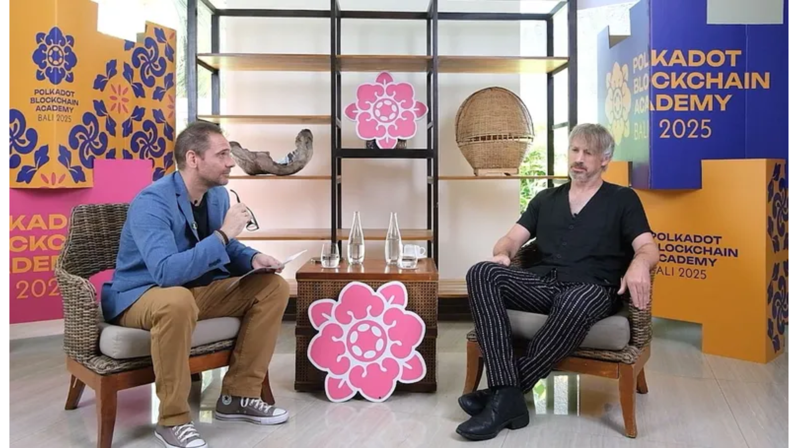

Análisis · IA y sociedad
Tecnología &
Sociedad
Entender es lo más importante.
Estudiar la tecnología para explicar la realidad.
Más sobre el proyecto →Último análisis · Ámbito
El verdadero negocio de la Inteligencia Artificial
La disputa entre el gobierno de los Estados Unidos y Anthropic, la empresa detrás de Claude, abre la puerta a cuestiones poco difundidas. Mientras las cifras que se invierten son astronómicas, no está claro cuál será el modelo de negocio para el consumidor final; pero analizado el uso de la IA en escenarios bélicos, y los acuerdos entre las Big Tech, el monstruo es imparable.
Leer análisis →Análisis · Economía digital
El verdadero negocio de la Inteligencia Artificial
La disputa entre el gobierno de los Estados Unidos y Anthropic, la empresa detrás de Claude, abre la puerta a cuestiones poco difundidas. Mientras las cifras que se invierten son astronómicas, no está claro cuál será el modelo de negocio para el consumidor final; pero analizado el uso de la IA en escenarios bélicos, y los acuerdos entre las Big Tech, el monstruo es imparable.
Leer artículo →
Entrevista · Tecnología y poder
Gavin Wood: “El mundo necesita utilizar Blockchain”
El multimillonario inglés fundador de Ethereum, la criptomoneda más cara del mundo detrás de Bitcoin, y Polkadot, patrocinador del Inter de Miami, jamás había concedido una entrevista a un medio fuera del ámbito cripto. En Bali, Indonesia, como parte de un encuentro organizado por Polkadot Blockchain Academy, brindó una mirada optimista sobre el futuro de la tecnología.
Ver entrevista →Reportaje · Emprendimiento latino
Una startup creada por un argentino ganó US$1 millón en Nueva York
Leer artículo →Reportaje · Política y comunidades
Efecto Messi: la AFA y North Bay Village invierten US$10 millones
Leer artículo →Perfil · Política y comunidad
Christi Fraga, la alcaldesa que trae oxígeno a la política de EE.UU.
Leer artículo →● En focoElecciones algorítmicas: cómo los datos están redefiniendo la democracia


Entrevistas · Archivo
Once Upon a Founder
Un formato narrativo original dedicado a las personas que construyen innovación latina en Estados Unidos.
El proyecto
La tecnología nunca es solamente técnica.
Un espacio para detenerse, conectar hechos, investigar fuentes y estudiar la tecnología como una forma de explicar la realidad.
Leer el manifiesto →